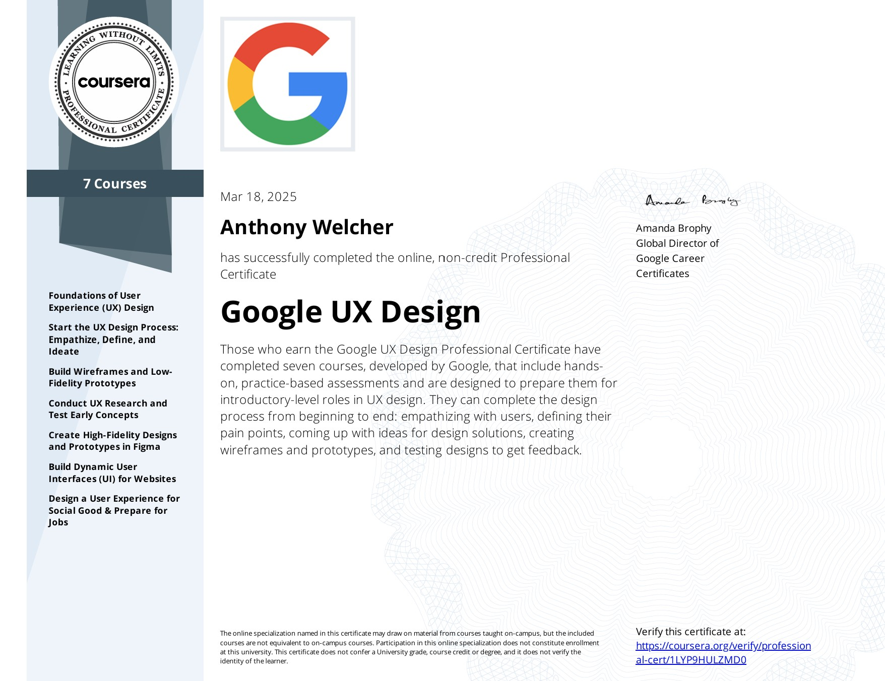
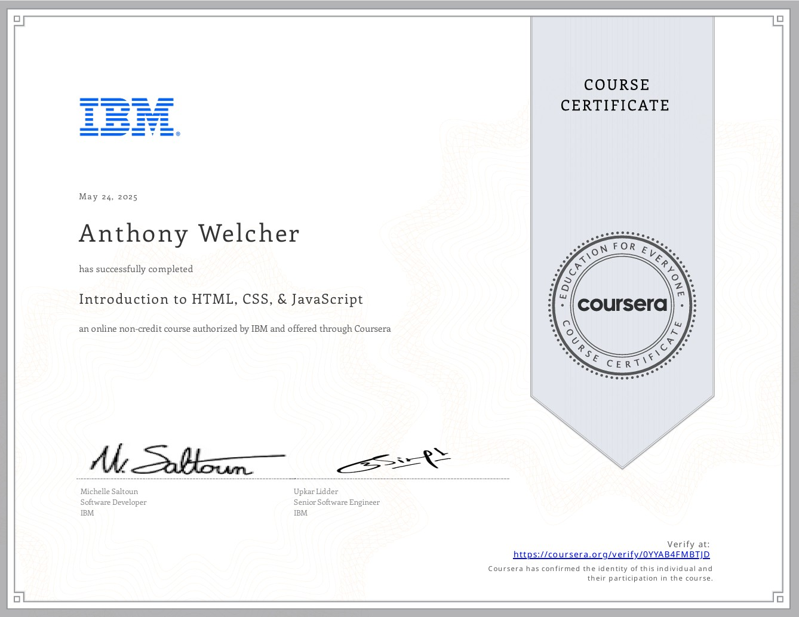
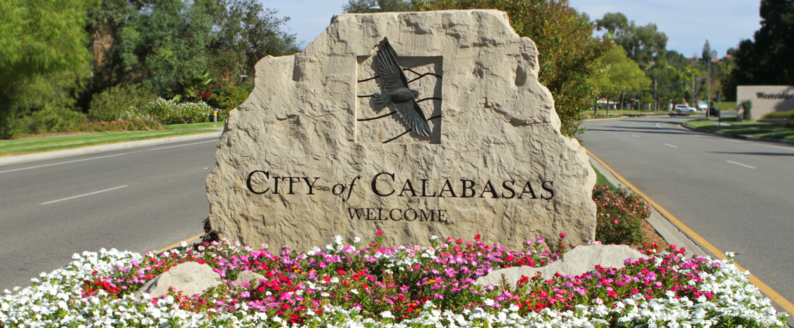

Anthony Welcher: Freelance Product Designer & Student Full-Stack Developer
Email: anthonywelcher@yahoo.com
Phone Number:
(805) 258-8599
Objective: To find a remote position that uses my skills in mobile application design and allows me to expand my repertoire as an aspiring developer!
Skills:
- 2+ years experience designing mobile applications, 1+ years w/ Figma, 3+ months w/ web-development,
- Empathizing & observing, managing the clock, creative problem-solving, strategic decision-making, clearly communicating
- Over five years total experience working in direct-customer service; both front-of-house and back-of-house!
Certificates:
-  Professional UX Design (Google)
-  Introduction to HTML, CSS, and JS (IBM)
End of 2025 Goals:
- Finish the IBM Full-Stack Development Course
- Learn libraries such as React & BootStrap; Continue to practice w/ Node.js & server-side development
- Practice deployment w/ containers; Utilize CDN's for cloud-based services such as AWS.
- Complete curriculums such as Marjin Haverbeke's: Eloquent Javascript & Wes Bos's: JavaScript30
Education:
- San Diego State University: Bachelor's in Business Administration w/ emphasis in Marketing & minor in Entrepreneurship December 2021
- Santa Barbara City College : Associates in Economics & Associates Business Administration May 2019
- Foothill Technology High-School : Ventura, CA June 2017
Passions:
- Gaming: I have had many connections and self-discoveries forged from playing both video-games and board-games. For example, my proclivity towards strategy games such as Chess and Risk, was an early indicator that I was a decision-maker. I consider myself a proponent of "gamifying" systems at scale!
- Cooking: As a result of working at high-quality restaurants over the years, I experienced the double-edged sword of being spoiled by the unrequested gifts of the kichen.
- Fishing: I do not usually catch a lot, but when I do, I think I'm Josh Jorgensen!
- Travelling: Travelling the world is practically the new American dream! Over the years, I have had the privilege of going to Hawaii, Costa Rica, Canada, Mexico, Thailand, and Europe! Although I would love to visit other places such as Bali, Portgual, Singapore or Brazil, I am content with the places I have had the opportunity to visit! My passion for travel has made me comfortable interacting with people from various backgrounds.
 LinkedIn
LinkedIn  GitHub
GitHub  Upwork
Upwork  Behance
Behance Location:

Calabasas city image